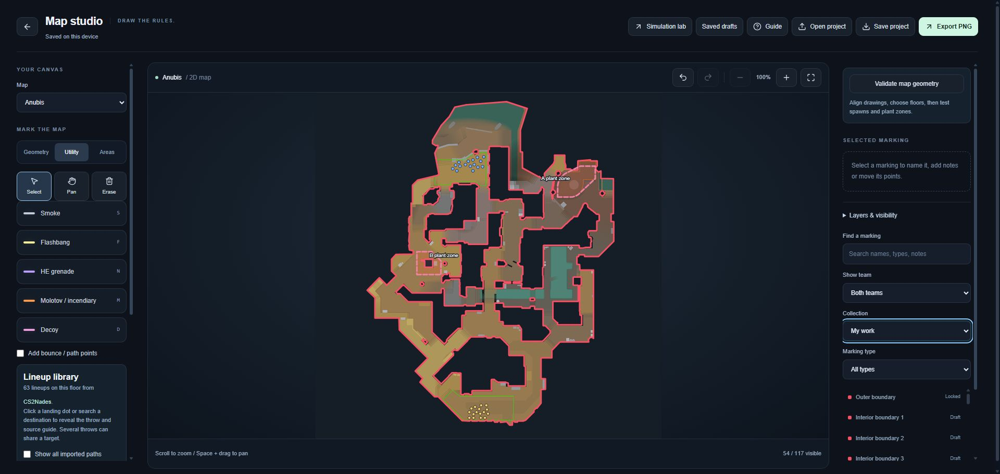
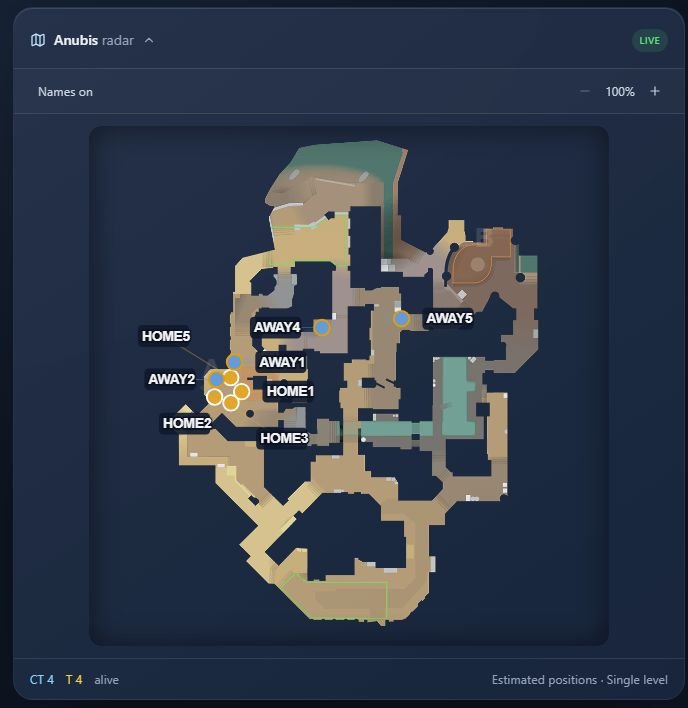
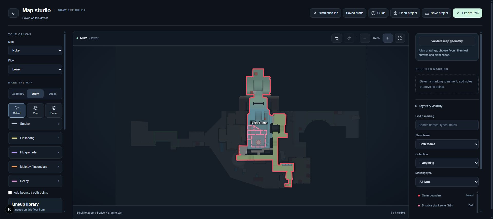
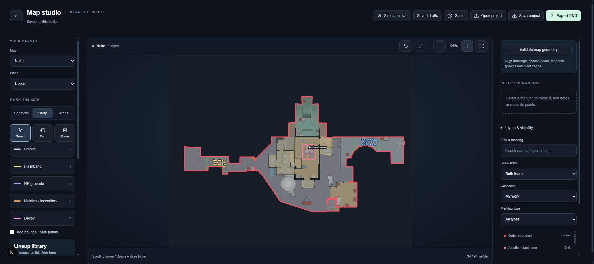
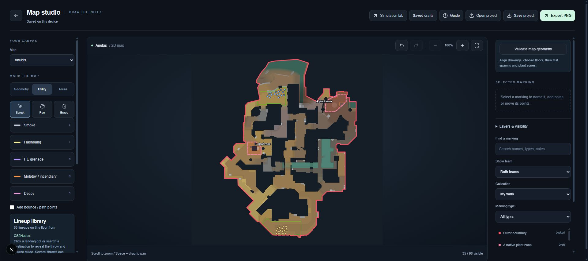
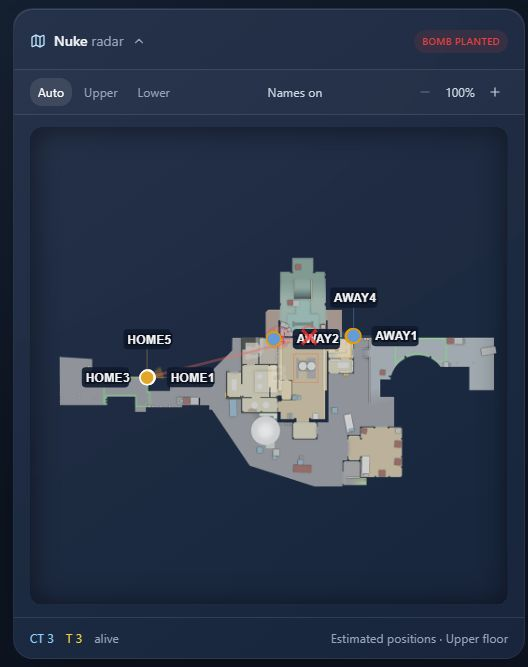

Native map review examples
Captured from the running application, 22 September 2026. Blue pins: CT. Gold pins: T. Pink outlines: native plant-volume pieces. Red outlines: existing draft boundaries. Click an image for full size.
All seven additional maps have draft imports. These examples verify presentation; collision masks, spawn grounding and exact trigger overlap remain unfinished.
Anubis - repaired interior boundaries
18 internal radar voids now have 19 editable outline segments. Native navigation at every height is protected. Draft wall heights remain unverified.

Anubis - moving game radar
Actual game radar component paused at 30.4 seconds after browser playback. Players now follow routes around obstacles. This uses a mock round with estimated positions, not a physical career replay.

Nuke - lower floor (archived map)
Six separate native B-site pieces. One overview label keeps the geometry readable.

Nuke - upper floor (archived map)
Native A footprint with blue CT and gold T spawn-origin pins.

Anubis - native sites and spawns
Entity offsets applied before projecting the two site hulls.

Actual game radar component
Existing test round in MapRadarPanel. Estimated positions, not a native physical replay. This capture shows current presentation, not completed engine integration.
